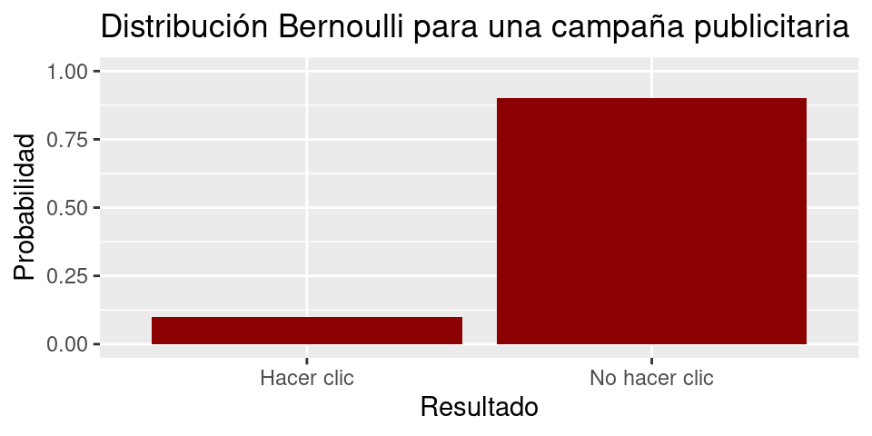

Unidad 1 Tópicos básicos de estadística
1.1 Conceptos
Datos
Un dato es cualquier evento o hecho que no ha sido dotado de significado, es decir, es cualquier hecho del cual no se puede dar interpretación alguna.
Un ejemplo de este concepto, es cuando tratamos de responder la pregunta ¿por qué nos detenemos al caminar, cuando encontramos un semáforo en rojo? ¿Cuál es el dato? ¿Cuál es el significado?
Información
Los datos existen independiente de quien observa, y cuando una persona adquiere datos y los dota de significado, estos se convierten en información. Otra forma de entenderlo es:
En el ejemplo anterior, el decodificador es la persona que va caminando, y el significado (reglas para decodificar) que le damos al semáforo al estar en rojo, viene de las reglas sociales que indican como actuar en determinadas situaciones.
En estadística, mediante el uso de distintas herramientas, dotaremos de significado a los datos, para así generar información de utilidad en distintos fenómenos de estudio propios de su área.
Tipos de variables
Otro concepto básico de estadística, es el tipo de variable, es decir, el tipo de dato que estoy observando. La clasificación es la siguiente:
- Cualitativas (Nominales y Ordinales): variables no numéricas que pueden o no llevar un orden, respectivamente.
- Cuantitativas (Discretas y Continuas): variables numéricas que pueden o no ser enumeradas, respectivamente.
Ejemplo: Determinar la clasificación de las siguientes variables: tiempo, dinero, altura, cantidad de vecinos en el lugar donde vivo, grado de conformidad (conforme, medianamente conforme, nada conforme) respecto a un servicio, color de pelo de un grupo de personas.
Población y Muestra
- Población: La población es el conjunto de todos los sujetos de interés en un estudio.
- Muestra: La muestra es un subconjunto de la población a través de los cuales el estudio recoge los datos. Aspectos importantes de la muestra son el tamaño y distribución de las características.
Determinar en cada caso la población y la muestra:
- Se realiza un sondeo para determinar los rubros con mayor inflación de venta de mercado en Santiago, para ello se estudia el rubro con mayor ingreso líquido de ventas, en algunas de las comunas de Santiago.
- La encuesta ENUSC elabora anualmente un informe respecto a la seguridad ciudadana, para ello, se contacta a una cantidad de personas determinadas de cada región del país, dando así, resultados a nivel nacional y regional.
Parámetros y Estadísticos
Ambos conceptos son utilizados de manera frecuente en distintos medios de comunicación, cometiéndose el error de tratarlos como sinónimos. Sin embargo, tienen definiciones totalmente distintas:
- Parámetros: característica numérica de resumen de la población.
- Estadísticos: característica numérica de resumen de la muestra.
Veamos el siguiente gráfico y, distingamos el parámetro y estadístico correspondiente.
Estimador y Estimación
- Estimador: Un estimador es un estadístico usado para aproximar (incertidumbre) el valor de un parámetro. Usualmente no cambia la técnica entre la población y la muestra, por ejemplo, si deseo aproximar la proporción de bolitas rojas en la población, se usaría la proporción de bolitas rojas en la muestra.
- Estimación: Una estimación es el número que resulta de aplicar el estimador a una muestra particular. Esto difiera levemente de la definición anterior, ya que en términos estrictos, el estimador solo es la “fórmula”, y la estimación es el valor resultante al aplicar la fórmula. Sin embargo, hoy en día es muy común encontrar textos en donde el estimador se considera tanto para la fórmula como para el valor obtenido.

¿Cuándo diríamos que una estimación es buena?
Variabilidad muestral
Efectivamente, al estimación de un parámetro está fuertemente determinada por la muestra con la que uno trabaja. La forma en la que se elige una muestra es azarosa, por lo que es imposible saber de antemano si la estimación será buena o mala respecto al parámetro (error de estimación). En estadística, la forma en la que se elige o genera una muestra puede llegar a ser muy compleja, siendo un tema que está fuera del alcance de este curso. Cabe mencionar que en todo momento la elección es ``azarosa’’, es decir, no podemos intencionarla en su totalidad.
El concepto detrás de esto es la variabilidad muestral, el cual, indica que dependiendo de la muestra que se obtenga de la población, esta se comportará distinto en relación al estadístico (igualmente para el valor del estimador: estimación).

Figura 1.1: Población
Figura 1.2: Muestra 1

Figura 1.3: Muestra 2
Representatividad y sesgo de la muestra
Discusión: Ambos conceptos se usan con frecuencia en la vida cotidiana, y a su vez están mal empleados. El sesgo no es una propiedad de la muestra sino que del estimador (concepto avanzado de estadística).
Por otro lado, la representatividad no es un concepto válido matemáticamente (no existe tal definición).
Medidas de Tendencia Central (MTC)
- Media: \(\bar{x} = \displaystyle\frac{1}{n}\displaystyle\sum_{i=1}^n x_i\)
- Mediana: La mediana de un conjunto de observaciones es el valor para el cual, cuando todas las observaciones se ordenan de manera creciente, la mitad de éstas es menor que este valor y la otra mitad.
- Moda: La moda de un conjunto de observaciones es el valor de la observación que ocurre con mayor frecuencia en el conjunto.
1.2 Gráficos descriptivos
Los gráficos son una herramienta de resumen de información visual. Se usa tanto de forma descriptiva como analítica.
Para ilustrar los diferentes gráficos, usaremos la base de datos rock que viene incluida en R, la cual, contiene mediciones de 48 muestras de roca de un yacimiento de petróleo. Los las columnas de esta base son:
- area: área del espacio de poros, en píxeles de 256 por 256.
- peri: perímetro en píxeles.
- shape: perímetros dividido por la raíz cuadrada del área.
- perm: permeabilidad en mili-Darcies (unidad que se utiliza para cuantificar la capacidad de permeabilidad de un fluido a través de una roca; más información en este link).
Histograma
Es la forma idónea para mostrar una tabla de frecuencia de forma visual. Se debe tener cuidado con la cantidad de intervalos del histograma, se recomienda utilizar la regla de Sturges (\(1+\log_2(n)\), aproximando hacia el entero más próximo).
library(ggplot2)
datos = rock
ggplot(data = datos, aes(x = perm)) +
geom_histogram(color = "white", fill = "darkred", bins = 7) +
labs(title = "Histograma", x = "Permeabilidad (mD)", y = "Frecuencia")
Gráfico de caja
Este gráfico se utiliza para evidenciar las medidas de posición conocidas como cuartiles.
ggplot(data = datos, aes(y = perm)) +
geom_boxplot(color = "black", fill = "darkred") +
labs(title = "Caja", x = "Permeabilidad (mD)", y = "Dispersión/Cuantiles") 
Gráfico de violín
Gráfico utilizado para conocer la concentración de datos; es muy similar al histograma.
g = ggplot(data = datos, aes(x = 1, y = perm)) +
geom_violin(trim = F, alpha = 0.5, fill = "aquamarine3") +
labs(title = "Violín", x = "", y = "Permeabilidad (mD)") +
theme(axis.ticks.x = element_blank(),
axis.text.x = element_blank())
g
Gráfico de violín + caja + promedio
g + geom_boxplot(width = 0.1, color = "black",
alpha = 0.3, fill = "darkblue") +
stat_summary(fun = mean, geom = "point",
size = 1, color = "red")
Gráfico de barras
Gráfico por excelencia para visualizar la frecuencia de variables cualitativas.
datos$Perm2 = ifelse(datos$perm > 500, "Mayor a 500", "Menor a 500")
ggplot(data = datos,aes(x = Perm2)) +
geom_bar(fill = "darkgreen") +
labs(title = "Barras", x = "Permeabilidad (mD)", y = "Frecuencia")
1.3 Ejercicios
Desarrollar el Taller 1.